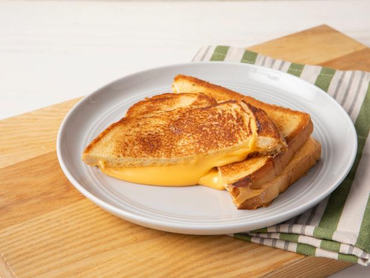

College Style Grilled Cheese

The famous grilled cheese sandwich recipe
If you've ever spent time in a college, you know this wonderful, delectable meal.
It is probably one of the easiest and quickest meals to make.
Is it tasty? Not always. Is it impressive?
That's a big no. Most importantly: is it cheap and better than ramen? YES!
Ingredients
- 2 slices of day old or bargain bread
- Butter you ask your waiter friend to get you from the restaurant they work at
- Cheese. This is where you can splurge. Kraft singles for the well-to-do.
Steps
- Spread butter on outside of bread
- Place cheese between the pieces of bread
- Place buttered side of bread on skillet over medium heat
- Flip when lightly browned
- Once the other side is browned, place on your napkin, or directly between your hands
- Enjoy as the nostalgia rushes over you